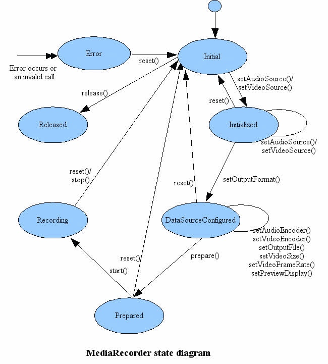

MediaRecorder录像
录像状态图
像播放器那样，录像也有明确的状态时序。特别是在配置参数时，需要严格按照时序来调用配置接口。先调用setAudioSource()/setVideoSource()设置音视频源，然后调用setOutputFormat()设置输出格式，再设置音视频相关参数，接着调用prepare()准备就绪，调用start()启动。详细的状态时序如下图所示：

音视频源
音频源包括：麦克风、语音电话、语音识别、语音通话等。描述如下：
public final class AudioSource {
public final static int AUDIO_SOURCE_INVALID = -1;
public static final int DEFAULT = 0;
public static final int MIC = 1;
public static final int VOICE_UPLINK = 2;
public static final int VOICE_DOWNLINK = 3;
public static final int VOICE_CALL = 4;
public static final int CAMCORDER = 5;
public static final int VOICE_RECOGNITION = 6;
public static final int VOICE_COMMUNICATION = 7;
public static final int REMOTE_SUBMIX = 8;
public static final int UNPROCESSED = 9;
}
视频源包括：Camera、Surface。描述如下：
public final class VideoSource {
public static final int DEFAULT = 0;
public static final int CAMERA = 1;
public static final int SURFACE = 2;
}
输出格式
媒体文件输出格式包括：3gp、mp4、amr、aac、ts、webm等。描述如下：
public final class OutputFormat {
public static final int DEFAULT = 0;
public static final int THREE_GPP = 1;
public static final int MPEG_4 = 2;
public static final int RAW_AMR = 3;
public static final int AMR_NB = 3;
public static final int AMR_WB = 4;
public static final int AAC_ADIF = 5;
public static final int AAC_ADTS = 6;
public static final int OUTPUT_FORMAT_RTP_AVP = 7;
public static final int MPEG_2_TS = 8;
public static final int WEBM = 9;
};
编码格式
编码格式包括音频编码和视频编码。
音频编码包括：amr、aac、vorbis等。描述如下：
public final class AudioEncoder {
public static final int DEFAULT = 0;
public static final int AMR_NB = 1;
public static final int AMR_WB = 2;
public static final int AAC = 3;
public static final int HE_AAC = 4;
public static final int AAC_ELD = 5;
public static final int VORBIS = 6;
}
视频编码包括：h263、h264、mpeg4、vp8、hevc。描述如下：
public final class VideoEncoder {
public static final int DEFAULT = 0;
public static final int H263 = 1;
public static final int H264 = 2;
public static final int MPEG_4_SP = 3;
public static final int VP8 = 4;
public static final int HEVC = 5;
}
配置参数
音视频的配置参数包括：码率、帧率、宽高、经纬度位置、采样率、声道数、profile、level等。也可以通过CamcorderProfile获取对应分辨率的参数。完整示例代码如下：
private fun initMediaRecord(videoSource: Int, surface: Surface?, outputPath: String) {
if (videoSource == MediaRecorder.VideoSource.CAMERA
|| videoSource == MediaRecorder.VideoSource.DEFAULT) {
// open camera
mCamera = Camera.open()
mCamera!!.setDisplayOrientation(90)
mCamera!!.unlock()
mMediaRecorder?.setCamera(mCamera)
}
// Note: pay attention to calling order
mMediaRecorder?.setVideoSource(videoSource)
mMediaRecorder?.setAudioSource(MediaRecorder.AudioSource.MIC)
if (usingProfile) {
// QUALITY_480P QUALITY_720P QUALITY_1080P QUALITY_2160P
val profile = CamcorderProfile.get(CamcorderProfile.QUALITY_720P)
mMediaRecorder?.setProfile(profile)
} else {
mMediaRecorder?.setOutputFormat(MediaRecorder.OutputFormat.MPEG_4)
mMediaRecorder?.setAudioEncoder(MediaRecorder.AudioEncoder.AAC)
mMediaRecorder?.setVideoEncoder(MediaRecorder.VideoEncoder.H264)
mMediaRecorder?.setVideoSize(640, 480)
mMediaRecorder?.setVideoEncodingBitRate(5000 * 1000)
mMediaRecorder?.setVideoFrameRate(25)
mMediaRecorder?.setAudioChannels(2)
mMediaRecorder?.setAudioSamplingRate(48000)
}
mMediaRecorder?.setOutputFile(outputPath)
if (surface != null && (videoSource == MediaRecorder.VideoSource.CAMERA
|| videoSource == MediaRecorder.VideoSource.DEFAULT)) {
mMediaRecorder?.setPreviewDisplay(surface)
}
}
private fun startRecordInternal(videoSource: Int, surface: Surface?, outputPath: String) {
initMediaRecord(videoSource, surface, outputPath)
try {
mMediaRecorder?.prepare()
if (videoSource == MediaRecorder.VideoSource.SURFACE) {
mMediaProjectionController?.createVirtualDisplay(mMediaRecorder?.surface!!)
}
mMediaRecorder?.start()
} catch (e: Exception) {
Log.e("MediaRecorder", "start recorder error=$e")
}
}
fun startRecord(videoSource: Int, surface: Surface?, context: Context, outputPath: String) {
if (mMediaRecorder == null) {
mMediaRecorder = MediaRecorder()
}
if (videoSource == MediaRecorder.VideoSource.SURFACE) {
mOutputPath = outputPath
mMediaProjectionController = MediaProjectionController(MediaProjectionController.TYPE_SCREEN_RECORD)
mMediaProjectionController?.startScreenRecord(context)
return
}
startRecordInternal(videoSource, surface, outputPath)
}
fun stopRecord() {
if (mMediaRecorder != null) {
mMediaRecorder?.stop()
mMediaRecorder?.reset()
}
if (mCamera != null) {
mCamera!!.stopPreview()
}
if (mMediaProjectionController != null) {
mMediaProjectionController!!.stopScreenRecord()
}
}
fun release() {
if (mMediaRecorder != null) {
mMediaRecorder?.release()
mMediaRecorder = null
}
if (mCamera != null) {
mCamera!!.release()
mCamera!!.lock()
}
}
AudioRecord录音
创建AudioRecord
创建AudioRecord对象需要4个参数：audioSource、sampleRateInHz、channelConfig、audioFormat、bufferSizeInBytes。创建示例如下：
private fun initAudioRecord() {
val sampleRate = 44100
val audioFormat = AudioFormat.ENCODING_PCM_16BIT
val channelConfig = AudioFormat.CHANNEL_IN_STEREO
minBufferSize = AudioRecord.getMinBufferSize(sampleRate, channelConfig, audioFormat)
mAudioRecord = AudioRecord( MediaRecorder.AudioSource.MIC,
sampleRate,
channelConfig,
audioFormat,
minBufferSize)
}
录音线程
由于录音过程会阻塞地读取数据，所以需要开启子线程。需要注意的是，录音保存的数据是PCM裸流，如果要保存为音频文件，需要转换为WAV格式。 录音线程的示例代码如下：
private class RecordThread(recordPath: String, audioRecord: AudioRecord, bufferSize: Int) : Thread() {
var isRecording = false
private val lock = Object()
private var mPath: String? = null
private lateinit var mData: ByteArray
private var mBufferSize = 0
private var mAudioRecord: AudioRecord? = null
private var mOutputStream: FileOutputStream? = null
init {
mPath = recordPath
isRecording = true
mBufferSize = bufferSize
mAudioRecord = audioRecord
}
override fun run() {
super.run()
try {
mData = ByteArray(mBufferSize)
mOutputStream = FileOutputStream(mPath)
} catch (e: Exception) {
Log.e(TAG, "open file error=$e")
isRecording = false
}
while (isRecording) {
synchronized(lock) {
if (isRecording) {
val size: Int = mAudioRecord?.read(mData, 0, mBufferSize)!!
if (size > 0) {
mOutputStream?.write(mData, 0, size)
} else if (size < 0) {
Log.e(TAG, "read data error, size=$size")
}
}
}
}
if (mOutputStream != null) {
try {
mOutputStream?.close()
} catch (e: IOException) {
e.printStackTrace()
}
}
// convert pcm to wav
val wavPath = File(mPath).parent + "/hello.wav"
WavUtil.makePCMToWAVFile(mPath, wavPath, true)
}
}
开始录音、停止录音、释放资源的相关控制如下：
fun startRecord(recordPath: String) {
if (mAudioRecord == null) {
try {
initAudioRecord()
} catch (e: Exception) {
return
}
}
if (mAudioRecord!!.recordingState == AudioRecord.RECORDSTATE_RECORDING) {
return
}
let {
mAudioRecord!!.startRecording()
mRecordThread = RecordThread(recordPath, mAudioRecord!!, minBufferSize)
mRecordThread!!.start()
}
}
fun stopRecord() {
if (mRecordThread != null) {
mRecordThread!!.isRecording = false
mRecordThread!!.interrupt()
mRecordThread = null
}
if (mAudioRecord != null) {
mAudioRecord!!.stop()
}
}
fun release() {
mAudioRecord?.release()
mAudioProcessController?.release()
}
MediaMetadataRetriever
MediaMetadataRetriever用于解析多媒体信息和获取指定时间戳的图像。其中，解析多媒体信息发生在解封装阶段，不会太耗时；而获取图像(即抽帧)，发生在编解码阶段，有点耗时。
解析多媒体信息
多媒体信息包括：标题、时长、码率、视频宽高、旋转角度等。示例代码如下：
fun retrieveMetadata(path: String) {
val retriever = MediaMetadataRetriever()
try {
retriever.setDataSource(path)
title = retriever.extractMetadata(MediaMetadataRetriever.METADATA_KEY_TITLE)
val durationStr = retriever.extractMetadata(MediaMetadataRetriever.METADATA_KEY_DURATION)
if (durationStr != null) {
duration = durationStr.toLong()
}
val bitrateStr = retriever.extractMetadata(MediaMetadataRetriever.METADATA_KEY_BITRATE)
if (bitrateStr != null) {
bitrate = bitrateStr.toInt()
}
val widthStr = retriever.extractMetadata(MediaMetadataRetriever.METADATA_KEY_VIDEO_WIDTH)
if (widthStr != null) {
width = widthStr.toInt()
}
val heightStr = retriever.extractMetadata(MediaMetadataRetriever.METADATA_KEY_VIDEO_HEIGHT)
if (heightStr != null) {
height = heightStr.toInt()
}
try {
if (android.os.Build.VERSION.SDK_INT >= android.os.Build.VERSION_CODES.M) {
val frameRateStr = retriever.extractMetadata(MediaMetadataRetriever.METADATA_KEY_CAPTURE_FRAMERATE)
frameRate = frameRateStr.toFloat()
}
} catch (e: Exception) {
Log.e(TAG, "retrieve frameRate error=$e")
}
val hasVideoStr = retriever.extractMetadata(MediaMetadataRetriever.METADATA_KEY_HAS_VIDEO)
val hasAudioStr = retriever.extractMetadata(MediaMetadataRetriever.METADATA_KEY_HAS_AUDIO)
if (hasVideoStr != null && "yes" == hasVideoStr) {
thumbnail = retriever.getFrameAtTime(0)
} else if (hasAudioStr != null && "yes" == hasAudioStr) {
val byteArray = retriever.embeddedPicture
thumbnail = BitmapFactory.decodeByteArray(byteArray, 0, byteArray.size, null)
}
} catch (e: Exception) {
Log.e(TAG, "retrieve error=$e")
} finally {
retriever.release()
}
}
获取指定时间戳的图像
可以根据指定时间戳，获取对应的图像。在Android8.0以后，可以指定分辨率的缩放图像。使用场景包括：获取视频缩略图、获取音乐封面、视频拖动预览。
根据时间戳获取(视频帧)图像的API接口如下：
public Bitmap getFrameAtTime(long timeUs, @Option int option);
在Android8.0以后，可以获取指定分辨率的缩放图像：
public Bitmap getScaledFrameAtTime(long timeUs, @Option int option, int dstWidth, int dstHeight);
其中，Option包括上一个关键帧、下一个关键帧、最近关键帧、最近帧，默认为最近关键帧。声明如下：
@IntDef(flag = true, prefix = { "OPTION_" }, value = {
OPTION_PREVIOUS_SYNC, // 上一个关键帧
OPTION_NEXT_SYNC, // 下一个关键帧
OPTION_CLOSEST_SYNC, // 最近关键帧
OPTION_CLOSEST, // 最近帧(包括非关键帧)
})
@Retention(RetentionPolicy.SOURCE)
public @interface Option {}
获取音乐封面的API接口如下：
public byte[] getEmbeddedPicture();
MediaProjectionManager录屏
Android提供MediaProjectionManager结合VirtualDisplay进行录屏。但是录屏涉及用户隐私，所以开始录屏前需要弹窗询问用户。使用场景包括：截取屏幕图像、录屏保存为视频文件、录屏推流直播。
启动录屏
首先通过SystemService获取MediaProjectionManager，然后创建录屏Intent，使用Intent发起录屏请求，示例代码如下：
fun startScreenRecord(context: Context) {
val windowManager = context.getSystemService(Context.WINDOW_SERVICE) as WindowManager
displayMetrics = DisplayMetrics()
windowManager.defaultDisplay.getMetrics(displayMetrics)
mediaProjectionManager = context.getSystemService(Context.MEDIA_PROJECTION_SERVICE) as MediaProjectionManager
val intent = mediaProjectionManager?.createScreenCaptureIntent()
(context as Activity).startActivityForResult(intent, requestCode)
}
创建VirtualDisplay
用户点击录屏弹窗后，会回调onActivityResult，根据resultCode和data获取mediaProjection。调用createVirtualDisplay方法来创建虚拟显示，示例代码如下：
fun createVirtualDisplay(surface: Surface) {
virtualDisplay = mediaProjection?.createVirtualDisplay("hello", displayMetrics!!.widthPixels,
displayMetrics!!.heightPixels, displayMetrics!!.densityDpi,
DisplayManager.VIRTUAL_DISPLAY_FLAG_AUTO_MIRROR,
surface, null, null)
}
以截取屏幕图像为例，示例代码如下：
private fun saveBitmap(bitmap: Bitmap?, path: String) {
if (path.isEmpty() || bitmap == null)
return
var outputStream: FileOutputStream? = null
try {
outputStream = FileOutputStream(path)
bitmap.compress(Bitmap.CompressFormat.JPEG, 100, outputStream)
} catch (e: Exception) {
} finally {
outputStream?.close()
}
}
private fun getBitmap() {
val imageReader = ImageReader.newInstance(displayMetrics!!.widthPixels,
displayMetrics!!.heightPixels, PixelFormat.RGBA_8888, 3)
createVirtualDisplay(imageReader.surface)
imageReader.setOnImageAvailableListener ({ reader: ImageReader ->
val image = reader.acquireNextImage()
val planes = image.planes
val buffer = planes[0].buffer
val pixelStride = planes[0].pixelStride
val rowStride = planes[0].rowStride
val rowPadding = rowStride - pixelStride * image.width
val bitmap = Bitmap.createBitmap(image.width + rowPadding / pixelStride,
image.height, Bitmap.Config.ARGB_8888)
bitmap.copyPixelsFromBuffer(buffer)
val filePath = Environment.getExternalStorageDirectory().path + "/hello.jpg"
saveBitmap(bitmap, filePath)
image.close()
imageReader.close()
}, null)
}
fun onActivityResult(resultCode: Int, data: Intent) {
mediaProjection = mediaProjectionManager?.getMediaProjection(resultCode, data)
if (type == TYPE_SCREEN_SHOT) {
getBitmap()
}
}
AudioManager音频管理器
AudioManager管理对象包括：选择音频类型、调节音量、音频焦点、设置铃声模式、设置振动模式、播放音效等等。
音频类型
音频类型包括：语音电话、系统、铃声、音乐、闹钟、通知、辅助提示音等。具体类型如下：
public static final int STREAM_VOICE_CALL = AudioSystem.STREAM_VOICE_CALL;
public static final int STREAM_SYSTEM = AudioSystem.STREAM_SYSTEM;
public static final int STREAM_RING = AudioSystem.STREAM_RING;
public static final int STREAM_MUSIC = AudioSystem.STREAM_MUSIC;
public static final int STREAM_ALARM = AudioSystem.STREAM_ALARM;
public static final int STREAM_NOTIFICATION = AudioSystem.STREAM_NOTIFICATION;
public static final int STREAM_DTMF = AudioSystem.STREAM_DTMF;
public static final int STREAM_ACCESSIBILITY = AudioSystem.STREAM_ACCESSIBILITY;
调节音量
Android系统的音量等级为16，调节音量的接口如下：
public void adjustVolume(int direction, int flags);
其中，direction参数表示方向，包括增大音量、减小音量、开启静音、取消静音、切换静音、保持不变。 具体如下：
public static final int ADJUST_RAISE = 1;
public static final int ADJUST_LOWER = -1;
public static final int ADJUST_SAME = 0;
public static final int ADJUST_MUTE = -100;
public static final int ADJUST_UNMUTE = 100;
public static final int ADJUST_TOGGLE_MUTE = 101;
音频焦点
请求音频焦点的接口如下：
/**
* Request audio focus.
* Send a request to obtain the audio focus
* @param l the listener to be notified of audio focus changes
* @param streamType the main audio stream type affected by the focus request
* @param durationHint use {@link #AUDIOFOCUS_GAIN_TRANSIENT} to indicate this focus request
* is temporary, and focus will be abandonned shortly. Examples of transient requests are
* for the playback of driving directions, or notifications sounds.
* Use {@link #AUDIOFOCUS_GAIN_TRANSIENT_MAY_DUCK} to indicate also that it's ok for
* the previous focus owner to keep playing if it ducks its audio output.
* Alternatively use {@link #AUDIOFOCUS_GAIN_TRANSIENT_EXCLUSIVE} for a temporary request
* that benefits from the system not playing disruptive sounds like notifications, for
* usecases such as voice memo recording, or speech recognition.
* Use {@link #AUDIOFOCUS_GAIN} for a focus request of unknown duration such
* as the playback of a song or a video.
* @return {@link #AUDIOFOCUS_REQUEST_FAILED} or {@link #AUDIOFOCUS_REQUEST_GRANTED}
* @deprecated use {@link #requestAudioFocus(AudioFocusRequest)}
*/
public int requestAudioFocus(OnAudioFocusChangeListener l, int streamType, int durationHint);
其中，durationHint参数表示音频焦点保持时间，类型包括无焦点、不明确时长的焦点、瞬时焦点、瞬时且可被打断的焦点、瞬时独占的焦点。播放音乐的场景需要AUDIOFOCUS_GAIN，通知消息一般是AUDIOFOCUS_GAIN_TRANSIENT，录音、语音识别的场景使用AUDIOFOCUS_GAIN_TRANSIENT_EXCLUSIVE。具体描述如下：
public static final int AUDIOFOCUS_NONE = 0;
public static final int AUDIOFOCUS_GAIN = 1;
public static final int AUDIOFOCUS_GAIN_TRANSIENT = 2;
public static final int AUDIOFOCUS_GAIN_TRANSIENT_MAY_DUCK = 3;
public static final int AUDIOFOCUS_GAIN_TRANSIENT_EXCLUSIVE = 4;
public static final int AUDIOFOCUS_LOSS = -1 * AUDIOFOCUS_GAIN;
public static final int AUDIOFOCUS_LOSS_TRANSIENT = -1 * AUDIOFOCUS_GAIN_TRANSIENT;
public static final int AUDIOFOCUS_LOSS_TRANSIENT_CAN_DUCK =
-1 * AUDIOFOCUS_GAIN_TRANSIENT_MAY_DUCK;
在Android8.0以后，需要传递AudioFocusRequest作为参数来请求音频焦点。另外，当其他应用使用 AUDIOFOCUS_GAIN_TRANSIENT_MAY_DUCK 请求焦点时，系统可以在不调用应用的 onAudioFocusChange() 回调的情况下，自动降低音量和恢复音量。如果需要延迟获取焦点，可以调用如下方法：
setAcceptsDelayedFocusGain(true);